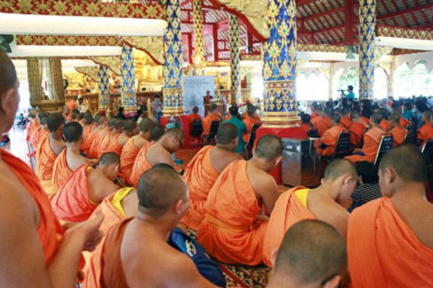
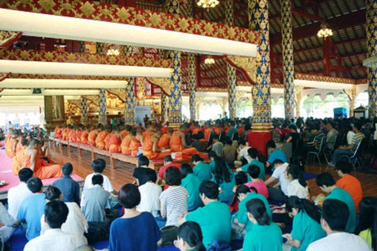

藏传佛教的本来面目——摩诃朱拉隆功大学清迈校区演讲
『2015年8月5日』
主持人：
尊敬的各位长老、朋友们，大家好！感谢摩诃朱拉隆功大学的真挚邀请与大力支持，才能让我们有缘相聚在此，也让第五届世界青年佛学研讨会在这美丽的海外佛国隆重召开。昨天晚上，第五届世青会已顺利、圆满地拉下了帷幕，但我们开放、包容、利他、求真的心，毫无减退。今天，我们又来到了摩诃朱拉隆功大学的大经堂，继续交流。下面，请孙通桑卡毗尼长老致欢迎辞。
孙通桑卡毗尼长老：
尊敬的索达吉堪布、各位大德、法师，早上好！非常欢迎大家来到松德寺，这里也是摩诃朱拉隆功大学的清迈分校。我要再次感谢索达吉堪布来到清迈，举行第五届世界青年佛学研讨会。我们泰国的很多出家众，都不是非常了解大乘佛教和藏传佛教，所以，今天很荣幸能够请到堪布，为大家介绍大乘佛法和藏传佛教的本来面目。
索达吉堪布来自喇荣五明佛学院，在世界各地都具有非常大的影响力。他以前在哈佛、耶鲁、斯坦福、哥廷根、清华、北大等高校作过非常精彩的演讲。三十多年以来，堪布身体力行地引导大众实践佛教修行方法，同时也利用一切闲余时间，互译汉藏经典，从事慈善事业。
喇荣五明佛学院非常大，有四万多僧众，但在今天这个殊胜的日子里，我就暂不多作介绍了。现在礼请索达吉堪布仁波切，为大家开示——

首先，向本师释迦牟尼佛作恭敬的敬礼！
今天很高兴与各位长老、高僧大德，还有各位老师、同学一起作这样的心灵分享，为大家简单地介绍一下“藏传佛教的本来面目”。
经过四天时间，第五届世界青年佛学研讨会在摩诃朱拉隆功大学落下了帷幕。本届世青会可以算是佛教界开放、包容、求真、利他思想的一个开端。虽然这已经是第五届了，但我却有了一些前所未有的感受，因为在这届研讨会上，南传、汉传、藏传佛教的思想，在佛教极其兴盛的泰国清迈开始了交流、学习、互相了解。这对我个人而言，是一件非常开心、欢喜的大事。
有智慧的人，在不同中见到相同
在漫长的历史长河当中，人类在文化、宗教等方面，既发展出种种不同，又产生了各种相同之处。我很喜欢国际上常用的一个词——“求同存异”，也就是说，我们有着各自不同的生存方式、文化背景、生活习惯、宗教信仰，但又有着共同的理想，比如离苦得乐。所以，在这个地球上，人们有着不同的背景，却又有着共同的目标。
有智慧的人，虽然能看到不同的观点、见解和修行方式，却又可将它们归于同样的观点、见解、修行方式和结果当中去。
例如，在佛教三大体系当中，我们都能见到大鹏的形象。泰国人将它作为国徽，代表着智慧、光明、力量。在汉传佛教中，大鹏被看作天龙八部中的智慧神，同时也是力量神，可以祛除邪魔和毒龙的各种危害。同样，藏传佛教也把它看作智慧的象征，依靠它可以祛除世间当中毒龙等许多障碍。
此外，在南传佛教的佛殿里可以看到本师释迦牟尼佛的像，而阿罗汉、菩萨的像则比较少。在汉传佛教的佛殿里，不仅供奉着释迦牟尼佛，还经常会有三十五佛、八十八佛、八大菩萨，以及四大天王等护法神。而藏传佛教的佛殿中，还有十六阿罗汉、文武百尊以及许多护法神等。没有系统学过佛的人可能会产生疑惑：“为什么都是佛教，却有这样的差别？”实际上，如果真正懂得这三大体系的教义，不但不会认为这里有矛盾，而且还会觉得，这样的显现非常有必要。
我十年前翻译过一部《释迦牟尼佛广传》，大概有三十多万字，在接近结尾的部分有一句话，说到释迦牟尼佛实际上是诸佛、菩萨化现的根本，就像太阳会放射出无量的光芒，而这些光芒都源自同一个太阳。同样的道理，如果我们将佛教看作太阳，把南传、汉传、藏传佛教看作不同的光芒，就能理解其实这三者没有任何矛盾。此外，这部《广传》当中也说，世间的忿怒相和寂静相的护法神、阿罗汉以及菩萨，都是本师释迦牟尼佛为不同众生所示现的幻化，我个人对这个道理深信不疑。
从戒律传承看佛教异同
从修行人的层面讲，佛教三大体系之间也有一些不同的地方。就拿佛教中的四众弟子——比丘、比丘尼、优婆塞和优婆夷（包括出家众中的沙弥和沙弥尼）来说，藏传佛教中只有沙弥、沙弥尼、比丘、优婆塞和优婆夷。由于历史和传统等原因，如今藏传佛教中没有比丘尼戒的传承，也没有比丘尼。在南传佛教尤其是泰国的佛教中，有比丘、沙弥、优婆塞和优婆夷，但没有比丘尼和沙弥尼，只有八戒女，这也与历史、传统以及佛教的本土化有关。而在汉传佛教当中，则是四众弟子齐全。刚才长老在介绍中说，我所在的佛学院有四万多出家人，其实没那么多，只有接近一万人。在这近一万人当中，大概有六千左右是藏传的沙弥尼和汉传的比丘尼，其他三千多人是藏传和汉传的比丘和沙弥，目前没有南传出家人。
现在有很多人，包括很多高僧大德都认为，藏传佛教有必要恢复比丘尼戒的传承。但历史上所形成的传统仪轨很难改变，这也是为什么藏地一直没有恢复比丘尼戒传承的原因之一。南传佛教也面临这样的问题，但我听说，在1998年，斯里兰卡已经有南传僧人传授比丘尼戒，而且在摩诃朱拉隆功大学，也有南传的沙弥尼在学习。这些应该是在一定的历史基础上，结合现代的思想和文化所发展起来的。
其实，我认为佛教的教义和戒律不需要改革，但弘扬佛法的方式、方法，则需要随着时代而改变。无论是南传、汉传还是藏传佛教，将来都可能会产生一些变化。从佛陀的《毗奈耶经》《阿含经》以及相关的律藏来看，佛陀的眷属当中，有圆满的四众弟子，既有比丘、比丘尼，也有优婆塞和优婆夷。因此，我也想过，从发展的趋势来看，很有必要在藏地恢复比丘尼戒的传承，但目前来讲，要突破传统的仪轨、观念，的确还有一定的困难。
如果佛教三大体系的高僧大德们能够团结合作，应该能做许多事情。比如，我们佛学院有很多藏传的沙弥尼，她们很想受比丘尼戒，而我主管的汉族出家众中，就有很多汉传的比丘尼。其实，如果让汉传比丘尼直接给藏传沙弥尼传比丘尼戒的话，按理来讲也很简单，所以我跟她们讲，她们可以自愿地接受汉传比丘尼戒，但因为历史上没有先例，所以我不敢违越这个传统。
我曾在美国哈佛大学见到一位专门研究世界宗教的教授，叫珍妮·嘉措。她跟我讲了好几个小时的比丘尼戒律，并建议我想办法恢复藏地比丘尼戒的传承。我当时回答：“你想得太简单了。你是用学术的眼光来看这个问题，但是佛教的仪轨和传统，并不是那么容易改变的。”我们作为修行人，不能随意改变戒律、传统。
看似不同，实则大同
看似不同的地方，不一定有矛盾，而不同之处，也有它的意义和价值。年轻人在面对社会，乃至整个世界时，要有能力解释佛教内的不同之处，这非常关键。当然，有些不同点是很容易解释的。比如，南传、汉传以及藏传佛教的出家人，在根本戒方面没有什么差别，但是在支分戒方面就略有不同：南传佛教比丘戒有227条，比丘尼戒有311条；汉传佛教比丘戒有250条，比丘尼戒有348条；而藏传佛教比丘戒有253条，比丘尼戒是364条。为什么会有这样的细微差别呢？因为佛陀的教义传播至不同的民族和地区后，在融入当地文化的过程中，高僧大德们为了弘扬佛法，就会因地制宜，制定一些不同的地方。
有这样一则公案：在迦叶佛时代，有一位哲哲国王梦到十八个人争扯一块布。迦叶佛对此解释道，释迦牟尼佛的教法会分成十八部，但每一部都是清净的教法，都有真实的解脱道。后来声闻十八部传至南传、汉传和藏传佛教，虽然有些地方不同，但实际上都是释迦牟尼佛纯正、清净的教法。所以，我们不能因为一两条戒律的不同，就说某个传承不合理。
本届世青会的每一位参会者都得到了一尊佛像，这是藏传佛教的释迦牟尼佛像，其法衣的花纹、褶皱以及顶髻，与南传佛教的佛像稍有不同，但在根本上没有任何差别。既然本师是一样的，那他所传下来的教义也不会有两样。
我不论在佛学院上课，还是去外面大学讲座，只要看到有人在记笔记，就非常欢喜。今天有很多摩诃朱拉隆功大学的出家人在记笔记，这说明大家都有一种求真的心态。不管记下来多少，大家都在认真地记着，我很开心。

藏传佛教的三主要道
下面，简单介绍一下藏传佛教中三个最主要的道。
首先，出家人要受持清净的出家戒律。就像刚才讲的，藏传佛教在大的戒条方面，与南传佛教没什么差别，在家人也主要受持三皈五戒。受持戒律是为了从三界轮回中获得解脱，所以要以出离心来受持，这在藏传佛教中特别重要。
然后，藏传佛教非常重视菩提心。如果我们的修行仅仅是为了自己解脱，就会带有一种自私的心，而藏传佛教特别强调为了利益所有众生，令他们从三界轮回当中解脱而发心。释迦牟尼佛在因地时，曾将他的大象、王妃、儿女，全部布施给婆罗门，甚至曾舍身喂虎。这些故事，在南传佛教的寺院壁画中也能看到。这种以布施等六波罗蜜多来利益一切众生的发心，就叫菩提心。
最后一个关键教义叫无二慧，也就是无我的智慧。无二慧指通过禅修，证悟一切万法都是空性，是一种非常宁静、清净、无有任何执著、任何事物都可以放下的状态。也就是说，五蕴上的“我”不存在，这叫人无我。然后再把这种智慧推广，我们会发现，原来不论是外面的一切事物，还是内在的一切感受，就连自己的心识，都远离一切边，这种证悟的境界叫做法无我。藏传佛教一般都很强调这种最终的空性境界，它是远离一切执著、最究竟的般若波罗蜜多，也就是智慧到彼岸。
古印度寂天菩萨所造的《入行论·智慧品》在藏地非常有名，其中就讲到了最深刻的法无我的道理，也讲到了四念处，即观身不净、观受痛苦、观心无常、观法无我。我相信南传佛教的修行人，也希望最后达到这样的境界。在这种境界中，各个传承体系之间不但没有矛盾，还能融为一体。
面对未来，每个人都应挑起重担
今天，你们很多参加世青会的年轻人也来到这里，这次在泰国能见到这么多出家人，是大家的一个福报。也许你们现在还不明白这其中的意义，但这在我们心里种下的善根、功德，的确是难以想象的。
到了南传佛教兴盛的国家，我们经常看见很多出家人，就像黄色的海洋一样，而到了藏传佛教兴盛的地方，则会经常看到像红色海洋一样的藏传出家人。虽然地理和传承不同，僧衣的颜色也有差别，但我们内心所了悟的佛陀智慧没有差别，因为我们所观的都是四念处，所受的戒律也都是佛陀所制定的戒律。
所以，我很希望在家人，尤其是在家的年轻人，参加过此次世青会之后，也能对南传佛教的三宝生起信心，在南传出家人的面前恭敬地领受加持。此外，在座学习南传佛教的年轻人，也应该包容佛教的其他宗派，乃至于其他宗教，这一点非常重要。佛教的未来，主要还是靠你们年轻人，像我这样年龄比较高的人，可能再过几十年就不在世间了，所以你们一定要努力。
在藏传佛教中，有很多高僧大德不仅弘扬藏传佛教，同时也为了所有的佛教宗派能长久住世而做了很多事情。今天现场有两位来自台湾国际藏传佛教研究会的堪布，他们召集过藏传佛教不同教派的高僧大德们开“利美运动”的合作会议，也就是不分教派的合作会议。希望南传佛教的高僧大德们，也能主动地与其他教派对谈、商讨。
同样，在家人对佛教和众生也有一定的责任，也应该在这方面努力，发挥自己的作用。只要我们能够团结，即使是即将没落的文化和宗教，也有恢复的机会，但如果我们各执己见，那很有可能在几十年、几百年之后，佛教就会衰落。佛教跟其他宗教不同，它经得起智慧的观察，经得起科学的验证，因此，只要我们团结努力，科学越发达，佛教就越有机会更加兴盛。
最后我将我的师父——晋美彭措法王圆寂时留下的珍贵教言送给大家：“莫舍己道，勿扰他心。”莫舍己道，指不要放弃自己宝贵的传承、戒律和修行；勿扰他心，指不损害任何众生，而且在这个基础上，还要尽心尽力地帮助所有众生，为了让他们离苦得乐而奋发努力。